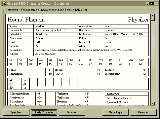
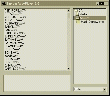
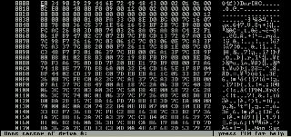
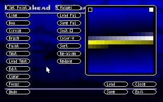
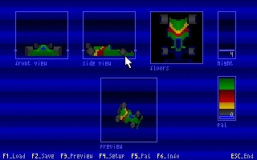
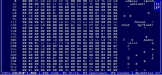
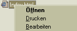
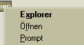

Midgard 1880 Character Creator
Win95 Charakter Erschaffer für Midgard 1880
(Ohne VBRuntime)

Express WavPlayer 3.2
Win95 Wave Player
(Ohne VBRuntime)
MovieScreenSaver
Bildschirmschoner der AVIs, MOVs und MPEGs abspielen kann
(Ohne VBRuntime)

BootSector Editor
erlaubt die Speicherung/Modifizierung des Bootsektors (nicht für HDs auf Windows)

Create
DOS Mode 13h Basierte Bildbearbeitungssoftware

Turbo IOS
Programm zur Erstellung isometrischer Bitmapobjekte
File Compare
besser als DOS/Win95 Compare weil umfangreicher
Bin-Data Converter
com Programme in QuickBasic DATA Lines umwandeln zum Aufruf von CALL ABSOLUTE

Hex Editor 3.3
DOS Hex Editor

EditHtml
Registrierungsschlüssel um Html-Dateien per Rechtsklick bearbeiten zu können

DOS Rechtsklick
Registrierungsschlüssel um ins Rechtsklickmenu auf Ordner den DOS-Prompt zu bekommen